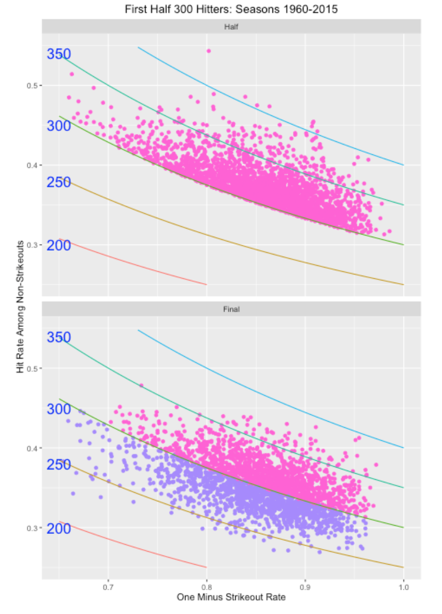

Predicting Baseball Outcomes
1 Introduction
This contains several blog posts from “Exploring Baseball Data Using R” on the general topic of prediction.
Sections 2 and 3 focus on predicting outcomes of a specific player – how many home runs will Daniel Murphy hit in the 2015 World Series? These plots illustrate the use of Bayesian modeling in this prediction procedure.
Section 4 addresses a general prediction problem. Suppose a player has a .300 or higher batting average midway through a season. What is the chance he finishes the season with a .300+ AVG?
Section 5 considers the problem of predicting the final count of home runs in the 2016 baseball season. We see that although we are predicting the count for only 98 remaining games, there is still substantial uncertainty about the number of home runs hit.
Sections 6 and 7 considers prediction of team results – given a team’s performance in the first-half, what is a reasonable prediction of the team’s W/L record in the second half?
Section 8 describes the use of the newer Statcast data to predict hits and outs based on the launch angle and exit velocity measurements.
2 Predicting Daniel Murphy’s Home Runs - Part I
2.1 Introduction
The baseball world is still in shock after watching Daniel Murphy’s home run prowess in the MLB playoffs. One natural question to ask is “how surprising is this result based on what we knew about Murphy before the 2015 playoffs?” As a Bayesian, let me describe an exercise that illustrates “learning from data” and might provide some insight into this question.
2.2 Murphy’s Home Run Talent
We don’t know Murphy’s talent or ability to hit a home run during the 2015 playoffs. Let’s represent this talent by a number \(P\) which is the probability Murphy hits a home run in a single AB.
2.3 A Prior for P
I’d like to construct a prior for \(P\) based on my beliefs about Murphy’s home run ability before the playoffs. We have some data, namely the number of HR and AB for the seven seasons that Murphy has been in professional baseball. I assume that Murphy has a unique probability, say \(P_j\), of hitting a home run for the \(j\)th season, and I assume that \(P_1, ..., P_7\) come from a common talent distribution. (This is often called a random-effects model.) Fitting the model to the home run data for the seven seasons, I get the following curve for the talent distribution. I think this is a reasonable approximation to my beliefs about Murphy’s home run ability before the 2015 playoffs.
2.4 Predicting the NLDS
Based on my prior, I can make a prediction about the number of home runs that Murphy will hit in the NLDS against the Dodgers. I can simulate the predictive distribution by first simulating a home run ability from my prior and then simulating a number of home runs \(X\) from a binomial distribution with sample size 21 (the number of at-bats in the NLDS) and probability of success \(P\). I get the following predictions (in 10,000 simulations) for the number of home runs – note that the actual number of home runs Murphy hit during the NLDS (3) is unusual, but clearly possible in my 10,000 simulations.
2.5 Updating My Prior
Now we have observed Murphy hit 3 home runs in 21 AB, my beliefs about Murphy’s home run hitting will change. There is an easy way to update my prior with this new information. I have graphed below my new prior and compared it with the original prior.
2.6 Predicting the NLCS
Based on my new prior, I can make predictions on Murphy’s home run output during the NLCS against the Cubs. I perform the same type of simulation exercise – simulate from my new prior, and then simulate from a binomial distribution with 17 AB. The graph shows the prediction for the number of NLCS home runs based on 10,000 simulations. Murphy actually hit 4 more home runs in the NLCS. It is interesting to note that this performance against the Cubs was more surprising given the current beliefs about Murphy’s talent than the three-home run performance against the Dodgers.
2.7 Predicting the World Series
Now this is the million-dollar question. How many home runs will Murphy hit in the 2015 World Series? We can take the same general approach. First, I revise my beliefs about Murphy’s home run talent \(P\). After seeing Murphy hit four homers in four games in the NLCS, my (new) prior will be adjusted so that his mean rate is about 0.032. If I know the number of ABs that Murphy will have in the World Series, I could predict the number of home runs he will hit. There are two uncertainties here – we don’t know the length of the World Series and we don’t know if the AL pitchers will even pitch to Murphy (remember all of the intentional walks given to Barry Bonds?). But I could make reasonable guesses (that is, priors) at the number of games and on the likelihood that Murphy would have an official at-bat, and then make predictions based on my prior on \(P\) and my other information.
2.8 What Have We Learned?
I think many of the naive calculations about the “degree of surprise” of Murphy’s post-season home run hitting overstate the rareness of this event. One type of calculation will compute the probability of a home run in six consecutive games by taking an estimated probability of hitting a home run in a single game and taking this to the 6th power. But this calculation ignores the idea that we chose this “6 home run” event since it was interesting, and this results in a probability calculation that is too small.
I think my Bayesian exercise is closer to the beliefs of a manager. Initially he did not think that Murphy’s home run ability was unusual, but his opinions were modified after seeing his three home runs in the NLDS. Watching Murphy hit HR in four consecutive games against the Cubs was surprising, but not so surprising given what he accomplished in the NLDS. These Bayesian calculations can be modified with different assumptions. Nice features of this approach is that it allows one to easily modify one’s beliefs about players’ abilities given new information, and allows you to easily make predictions for future game.
Of course, all of the calculations are done using R. The fitting of the random effects model is done using the LearnBayes package, the simulations use the rbeta() and rbinom() functions, and graphing using the ggplot2 package.
3 Predicting Daniel Murphy’s Home Runs - Part II
In the last post, I described a general Bayesian methodology for learning about Daniel Murphy’s “true” home run rate and making predictions about his future home run performance. In one sense those predictions were not real in that I knew how many opportunities (AB) Murphy would have in each series.
3.1 My Prior
Let’s focus here on predicting the number of home runs hit by Murphy in the World Series that starts shortly. Following my work in the last blog post, I think a reasonable prior for Murphy’s home run probability \(P\) is a beta density with shape parameters 15.3 and 459.8. The prior mean is about 0.032 – this is higher than his rate of hitting home runs in the 2015 regular season, but not that much higher. (The reader is encouraged to try other priors for \(P\), especially if you believe Murphy will be HOT this week.)
Here’s a picture of my prior:
3.2 What Else is Unknown?
What makes this prediction more interesting is that we don’t know the length (number of games) of the 2105 World Series, and we also don’t know how many at-bats Murphy will get in the individual games.
But we have some knowledge about lengths of World Series’ and also some information about typical number of at-bats for Murphy in a game, and we can use this knowledge to formulate priors for the number of games and the number of AB for Murphy in this series.
3.2.1 Number of Games
My opinion is that the Royals and the Mets are pretty evenly matched, so it is reasonable that the winner of each game is equally likely to be either team. With this assumption and assuming independence of game outcomes, we can get a probability distribution for the length of the series. (I don’t believe this distribution will be much different with other assumptions about the teams’ relative strengths.)
3.2.2 Number of At-Bats
To learn about the number of AB of Murphy for a single game, we look at the number of at-bats for Murphy during the 2015 season when he was a regular. Using this data, I estimate that, in a single game, Murphy will get 3, 4, or 5 at-bats with respective probabilities .14, .69, .17.
3.3 One Predictive Simulation
To predict the number of Murphy home runs for a single World Series by simulation, we
- Simulate a number of games \(N\)
- Simulate the number of at-bats for each of the \(N\) games – let the total number of at-bats be \(X\)
- Choose a true home run rate \(P\) at random from my beta(15.3, 459.8) prior
- Finally, simulate the number of home runs \(Y\) from a binomial distribution with size \(X\) and probability of success \(P\)
We repeat this process 10,000 times, obtaining a predictive distribution for the total number of Murphy home runs \(Y\) get during the series.
Number of Home Runs 0 1 2 3 4 5
Probability 0.473 0.343 0.137 0.038 0.008 0.001 So I’m 95 percent confident that Daniel Murphy will hit 2 or fewer home runs during the 2015 World Series. Of course, this statement is based on my priors on Murphy’s true home run ability, the length of the series, and the number of AB in each game.
3.4 Shiny App to Experiment with Different Priors
If you have a different opinion about Murphy’s home run talent during the 2015 World Series, I’ve built a Shiny app where you can play with different beta(a, b) priors for \(P\) and see the impact of these priors on the predictive distribution of home runs for Murphy. Just click here to see my Shiny app.
Also all of the R work for parts I and II of this Murphy study can be found at my gist site.
4 Making Sense of a 300 Midseason Batting Average
Suppose a player has a 300 (or higher) batting average midway through a season – what is the chance that he finishes the season with a 300+ batting average?
We’ll answer this question empirically and use the answer to motivate a decomposition of a batting average.
I collect all Retrosheet play-by-play data for each of the 1960-2015 seasons. I focused on the players who had at least 100 AB and batting average .300 (or higher) on July 1– there were 2619 players in this group (about 47 players each season).
Of these 2619 players, 1401 of them (53%) finished with a .300+ batting average. So one could say that the probability a 300+ midseason batter finishes with a 300+ average is .53. Given what we know at midseason, we would predict that it is slightly more probable than not that he finishes 300 or higher.
But one can make a more accurate prediction by looking at two components of a batting average. One can write
\[ AVG = \frac{H}{AB} = \frac{AB - SO}{AB} \times \frac{H}{AB - SO} \]
or
\[ AVG = (1 - SO.Rate) \times BABIP \]
where \(SO.RATE\) is the strikeout rate and \(BABIP\) is the proportion of hits (including HR) in balls put in play. For each of these players who achieved a 300+ midseason average, I construct a scatterplot of “One Minus the SO.RATE” against the BABIP. The contour lines correspond to constant values of AVG. Of course, all of the points for our selected players fall on or above the contour line corresponding to .300. Note that there is a lot of variability in the strikeout rates, although they all hit well “for average”.
The following graph compares the midseason and final averages of these players. As expected the cloud of points above .300 at midseason moves download to a cloud of points at the end of season where the points straddle the .300 line.

Look carefully at the bottom graph. Look at the points corresponding to players with a low value of “One Minus Strikeout Rate” (high strikeout rate) on the left side of the graph. Most of these players had a final season batting average under .300. In contrast, if you look at the points on the right (low strikeout rate), they appear to be more likely to have a final AVG over .300.
We can make this clearer by the use of a graph. For many values of One Minus Strikeout Rate (plus and minus a small neighborhood), I compute the proportion of hitters with a final batting average exceeding .300. (Remember overall that 53% of these hitters finish with a 300+ AVG.)
We see a strong relationship between One Minus Strikeout Rate and the chance he has a final season AVG over .300. If a player has, say a 25% strikeout rate (One Minus SO.RATE = .75), then his chance of a final season 300+ AVG is about .43. If instead, his strikeout rate is 10%, his chance of a final 300+ average is .575. Another way of saying this is that the high BABIP guys tend not to get a final 300+ AVG.
The message here is that all 300 batting averages are not the same. From a skill / luck perspective, there is more skill in a strikeout rate than in a BABIP rate and that translates into different future batting averages for players with different SO.RATE / BABIP characteristics. One can also reach this same conclusion from a modeling perspective and I’ll give a talk on this issue at the SABR Analytics meeting.
5 How Many Home Runs Will be Hit in 2016?
5.1 Introduction
As many of you know, the number of home runs hit in 2016 has increased dramatically from recent seasons. In fact, the current total is 5420 which is getting close to the record number of 5693 from the 2000 season. That raises the obvious question – with 7 days of baseball remaining, how like is it to tie or break the 2000 record? This is a good opportunity to illustrate Bayesian thinking. I’ll propose a simple model for the number of home runs hit by a team in a game, fit this model to the team/game data for the 2016 season, and then use this to predict the number of home runs hit in this last week of the baseball season.
5.2 A model for home runs
Let \(y\) denote the number of home runs hit by a team in an individual game – this is typically a small number like 0, 1, 2, 3, etc. I will assume that home run numbers for all of the 2016 games follow a negative binomial distribution with parameters size and mu (I am using the R syntax for the dnbinom() function). The parameter mu is the mean number of home runs and size is a dispersion parameter. (By the way, this is a better fitting model than the Poisson distribution which has only one free parameter.) To complete this model, I assign a vague, noninformative distribution to the parameters mu and size.
5.3 Fit the model
From Baseball Reference I am able to collect the number of home runs hit by team per game – there were over 4500 sampled values of \(y\). I fit the Bayesian model – I got estimates of 1.17 and 9.95 for mu and size , respectively. I can approximate the posterior distribution of (mu, size) by a bivariate normal distribution with mean vector (1.17, 9.95) and an associated variance-covariance matrix.
5.4 Make predictions
Looking at the 2016 baseball schedule, it appears that we have 98 games remaining (including the rescheduling of the Miami/Atlanta game), so we have 98 x 2 = 196 team/games remaining. To simulate the number of home runs hit in these 196 opportunities, we first simulate (mu, size) from the posterior distribution, and then simulate values of (y1, ..., y196) from the negative binomial distribution and compute the total number of home runs hit. If I repeat this process 1000 times, I get 1000 draws from the predictive distribution for the number of home runs hit in the remainder of the season.
5.5 How many home runs will be hit?
I have graphed the predictive distribution of the number of home runs hit in the remainder of this season below and overlaid the target of 273 to reach the 2000 season total.
5.6 What have we learned?
- There is a good amount of uncertainty about the actual number of home runs hit in the remaining 98 games. My best prediction is about 225, but it could easily be any value between 200 and 260.
- It is very unlikely that we will meet or exceed the 2000 season total. My calculations (based on my model) is that the predictive probability of meeting or exceeding the target is only about .002 or .2 %.
5.7 But …
Although this has been an interesting exercise, maybe we asked the wrong question. What is more important is maybe not the number of home runs hit, but rather the rate of home runs hit. Looking quickly at Baseball Reference, we see
In the 2016 season (with 7 days remaining in the season), we have 5420 home runs in 159,144 AB In contrast, in 2000, there were 5693 home runs in 167,290
Computing rates, we see that the 2016 home run rate is 3.406 percent which actually exceeds the 2000 rate of 3.403. So really 2016 might be the greatest home run hitting season of all time.
Another question is why – what is causing the increase in home run hitting in 2016? I have not done a careful investigation, but I think part of the answer is the players’ approach to hitting – a large fraction of the scoring in baseball is due to home runs.
5.8 Update (October 3).
The 2016 season just concluded and the total number of home runs hit is 5610, which means that 5610 - 5420 = 190 home runs were hit in the final week. Interesting, 190 falls in the left tail of my predictive distribution. This might suggest that my assumption that the mean number of home runs hit per game did not change across the season is incorrect. I suspect that some of the teams making the playoffs were playing their subs, but it is unclear what impact this would have on home run hitting. It is notable that the 2016 home run rate was 5610 / 165561 = 3.388 which did not exceed the 2000 home run rate of 3.403%..
6 Predicting Second Half Team Results - Part I
6.1 The Prediction Problem
Currently it is half way through the 2017 season and we’re observing some interesting team records:
- The 2016 World Series Winner, the Chicago Cubs, is currently 41-42.
- The Atlanta Braves are currently 40-41 in a rebuilding year.
- The LA Dodgers have a 55-29 record with a 22 1/2 game lead over the SF Giants who have a 33-52 record.
- The Phillies are 28-54 (it is interesting since it is extreme but perhaps not that surprising).
That raises the obvious question: Given a team’s first-half record, what is a reasonable prediction at a team’s W/L record in the second half?
One way of describing a team’s record is the difference between the number of wins (W) and losses (L):
Difference = \(W - L\)
So currently, the Dodgers’ Win/Loss difference is 55 - 29 = 26 and the Phillies currently have a Win/Loss difference of 28 - 54 = -26. (By the way, it may have made more sense to talk about “games over .500”, but one would get similar 2nd-half predictions.)
So I’ll rephrase my question this way: If you know a team’s W/L difference in the 1st half, what is a good prediction at the team’s W/L difference in the 2nd half of the season?
6.2 The Data
Retrosheet has single files for the game results for each season. I find it convenient to download all of the game log files and store them in a single folder on my computer, so it is easy to collect them for specific studies of interest.
6.3 The R Work for One Season
I have a single R function all_work() that does all of the work for a particular season of interest.
- For each team, I find the W/L record for all games through July 1 (the first half record) and also the W/L record for all games played from July 2 to the end of the season (the second half record).
- I graph the first half W/L difference against the CHANGE = 2nd half W/L difference MINUS 1st half W/L difference
Here is a illustration of this graph for the 2016 season where I label the plotting point with the team abbreviation.
Note that we see a negative relationship – teams that do well in the 1st half (like Texas and Cleveland) don’t do as well in the 2nd half. Similarly, teams that have bad 1st halves (like Minnesota and Cincinnati) tend to do better in the 2nd half. (This gives some hope for Phillies fans in the 2nd half of the 2017 season.)
To understand this negative relationship, we fit a line – the slope here is -0.51. This means that if a team has a W/L difference of 12 for the first half, we would predict the team to have a 6 W/L drop (to a W/L difference of 12 - 6 = 6) in the second half.
When I try this analysis for other seasons, we see a similar pattern, but the slope estimate can change. Here is the graph for the 2015 season.
6.4 A 50 Season Study
To see if this pattern holds across seasons, I repeat this analysis for all seasons from 1967 through 2016 and collect all of the slopes. Here is a dotplot of the 50 slopes – we see that the average slope is -0.44 and the single season slope can vary between -0.8 and -0.1.
6.5 Application
Let’s use the average slope -0.44 as our estimate of the relationship between a team’s first half W/L difference and the change in W/L difference. So my prediction is
2nd Half W/L Difference = 1st Half W/L Difference - 0.44 x 1st Half W/L Difference
Let’s apply this:
- The Phillies currently have a W/L difference of -26. I compute -26 * (-0.44) = 11.24. So I predict that the Phillies will improve in the 2nd half – their W/L difference will be -26 + 11 = -15.
- The Dodgers currently have a W/L difference of 26 – I predict their W/L difference will drop by 26 * (-0.44) = 11 which corresponds to a W/L difference of 26 - 11 = 15.
Now with additional information, one can get better estimates of a team’s W/L record in the second half. For example, I know the Cubs have a strong team, so it is reasonable to predict that their W/L record will improve in the 2nd half. But I’d need to look more carefully at the individual players and predict the 2nd half performance of each player, and collect these predicted performances to get a prediction at the team’s performance in the second half. But this “-0.44” method provides a quick method of predicting team performances by just using the team records.
6.6 R Function
To see the R function all_work.R that produces the above graph, see my gist site. I am assuming that one has collected the Retrosheet game log files and put them in a single folder on your computer. You might be interested in seeing how I find a team’s W/L record based on the single game results. Or you might be interested in seeing the ggplot2 code to produce the graph. The ggrepel package is useful in plotting point labels so they don’t overlap.
7 Predicting Second Half Team Results - Part II
7.1 Last Week’s Post
In the last post, I considered the problem of predicting a team’s second half W/L record based on its W/L record in the first half. I was using the win/loss difference W - L as my measure of success.
Based on reader comments, there were two issues on my post.
Some readers were confused when I looked at the change in win loss difference from the 1st to 2nd half (difference of differences?) Actually, as Andrew Wheeler has commented, it is misleading to make an inference based on the negative pattern in the (W/L record, Change in W/L record) scatterplot.
7.2 It is Misleading to Look at the Change Values
Let me first address the misleading issue by use of a R simulation. Suppose we take a measurement of a team’s performance for the 1st half and the 2nd half when the true correlation between the 1st and 2nd half values is equal to rho. I simulate 30 values of the (first half, 2nd half) values for the 30 teams from a bivariate normal distribution with zero means, unit standard deviations and correlation rho. Then I look at the observed correlation between the first half value and the Change = 2nd half value minus 1st half value. I repeat this simulation 1000 times and collect the 1000 observed correlations that I compute.
I did this simulation experiment four times for true correlation values of rho = 0, rho = 0.3, rho = 0.6, and rho = 0.9. Below I construct density graphs of the observed correlations for each of the four cases.
Several interesting things to see here:
- The relationship between the first half measure and the change score (difference between 1st and 2nd half scores) is negative even when the first and second half measures are uncorrelated (rho = 0). This is not intuitive – one would think that the first half and change measurements would have little relationship in this case.
- As the relationship between the 1st and 2nd half measures gets stronger (moving from Rho = 0 to Rho = 0.9), the relationship of the 1st half measure and the change score gets weaker (moves towards zero). Again, this is nonintuitive to me but perhaps there is a good explanation.
7.3 Back to the Prediction Problem
Okay, here’s a better way to look at the prediction problem. We are interested in predicting a team’s 2nd half performance (defined by W - L) using the 1st half W - L performance. Here I graph the first and 2nd half performances for the 2016 season.
If we thought the 1st half record is the best prediction of a team’s 2nd half record, we would be wrong. This graph demonstrates regression to the mean since the fitted slope is 0.45 which is smaller than 1. If we repeat this analysis for the past 50 seasons, we’d find that a typical slope is 0.53. So if a team like the Phillies has a W - L difference of -30, we’d predict its W - L difference in the 2nd half to be 0.53 times (-30) which is approximately -16.
7.4 Closing Comments
Thanks to Andy Wheeler who commented on the misleading issue on my graph. Actually, Andy has posted on this issue here.
On next week’s post, I plan to look at some hitters who have unusually high or low batting averages on balls in play and I’ll use some Statcast data to help understand what variables influence the BABIP values.
8 Hit Predictions from Statcast Data
8.1 Introduction
In last week’s post, I was interested in measuring a hitter’s ability to produce a hit from a batted ball. Specifically, I constructed a Z score that measures one’s ability to hit beyond what would be predicted based on knowing the launch angle and exit velocity. One issue that I didn’t discuss much was the basic prediction problem – what is a reasonable prediction of hit or out based on knowing the launch angle and exit velocity? Here I will talk about different types of predictions, measuring rates of correct predictions, and looking at the correct prediction rate at a player level.
8.2 Different Predictions
When one uses the generalized additive model, one can use the launch angle and exit velocity to obtain a predicted probability that the batted ball is a base hit. If the probability is high enough, we predict a hit – in the previous post I suggested (with no justification) using a .5 cutoff, so if the probability exceeds .5, we predict “hit”. But other cutoff values are possible, say .331, .2, or any value between 0 and 1. As an extreme case, consider a rule that ignores exit velocity and launch angle. If we simply predict “out” for any batted ball (ignoring launch angle and exit velocity), then we we would always be right if the batted ball was out. On the other hand, if the batted ball was a hit, then we’d be always wrong. Since 33.1 percent of all batted balls are hits and 66.9 % are out, the overall rate of correct predictions using this silly rule would be
P(silly rule is correct) = P(out) P(correct | out) + P(hit) P(correct | hit) = 0.669 x 1 + 0.331 x 0 = 0.669
So any reasonable prediction rule should be correct more than 66.9% of the time.
8.3 Evaluating a Prediction Rule by Error Rates
Let y denote the outcome (0 or 1) and yhat the prediction (0 or 1). In general, we can predict “hit” (or yhat = 1) if the predicted probability of hit exceeds some constant k, and predict “out” (or yhat = 0) if the probability of hit is smaller than k. We can evaluate this rule by the error rates
- P(yhat = 1 | y = 0) (predicting a hit when really it is an out)
- P(yhat = 0 | y = 1) (predicting an out when really it is a hit)
One way to assess the goodness of a prediction model is to compute these error rates for all possible cutoff values k. A common way to do this is to graph P(yhat = 1 | y = 0) against the P(yhat = 1 | yhat = 1) (one minus the prediction error) for all cutoffs k – the resulting graph is called the ROC Curve.
Here is a graph of the ROC curve for the gam model using exit velocity and launch angle to predict hits. Each point on the curve represents the use of this model for a specific cutoff value k. The area under this ROC Curve can be used to measure the goodness of this prediction model.
8.4 Comparing Models
To show that both exit velocity and launch angle are useful for predicting hits, we consider two simpler models – one gam model that only uses exit velocity to predict hits, and another gam model that only uses launch angle. Below I show the ROC curves for all three models. Also I label the points corresponding to two common prediction rules – one that predicts hit if the fitted probability exceeds .331 and another if the probability of hit exceeds .5. A couple of things are clear from the graph:
- If we were to use only one variable, launch angle is most important for predicting hits (larger area under the ROC curve).
- It is better to use both variables launch angle and exit velocity than one alone.
By the way, the overall rate of correct predictions using the .331 rule would be
P(out) P(correct | out) + P(hit) P(correct | hit) = 0.669 x 0.764 + 0.331 x 0.791 = 0.773
This correct prediction rate of 77.3% is about 10% higher than what we found using the silly prediction rule.
8.5 Correct Predictions at the Player Level
Suppose we predict hit if the fitted probability of hit exceeds .331. The bottom graph gives the proportion of correct predictions for each player in the 2017 season. Generally, for players with a reasonable number of batted balls, the proportion of correct predictions falls between 0.70 and 0.85 for most players. I’ve labeled a few interesting players – Reynolds and Stanton have correct prediction rates close to 0.85 (perhaps due to the large number of home runs), and Freese and Hernandez have correct prediction rates closer to 0.70. Hernandez is pretty fast and perhaps this reflects infield hits, but I am a little puzzled about the poor prediction rate for Freese.
8.6 Final Comments
- This post was motivated partly by my generalized linear models course that I’m teaching this semester. One learns best about statistical methods by trying them out on datasets of interest.
- Any model should be evaluated by its ability to make successful predictions. It is interesting that the rate of correct predictions using the Statcast variables is only 77.3%, although I suspect one could improve this rate by including other variables such as the spray angle. Since this correct prediction rate is low, this indicates that luck or other sources of variability are a bit part of hitting.
- Whenever one gets interested in individual differences such as the high and low prediction rates for Stanton, Reynolds, Hernandez, and Freese, the natural follow-up questions are: “Why? Do these hitters have special talents that cause these differences?” So as usual there is more to explore to address these questions.
- I have ignored the third key variable – spray angle – in this work. We’ll explore the influence of spray angle on the chance of a hit in next week’s post.